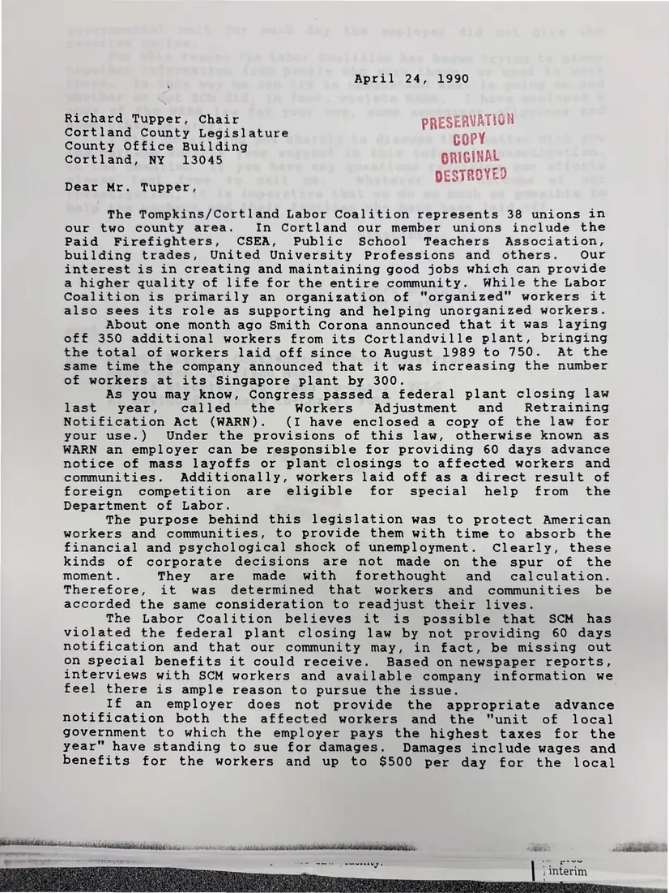
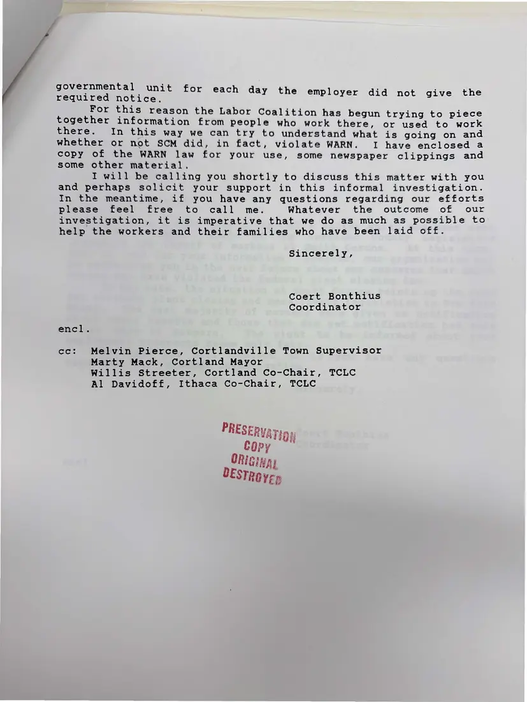

Letter, 2 pages
Coert Bonthius to Cortland County Legislature chair Richard Tupper on Smith Corona
April 24, 1990
The coordinator explains that the coalition, representing 38 unions, believes Smith Corona may have violated the federal plant closing law by not giving 60 days' notice, and that the county could be owed damages. He asks for the county's help with the investigation.
Download or cite this itemPages


(open zoom view)Read the page text (machine-read, mostly readable)
This text was generated automatically from the photograph and has not been corrected. The image is the authoritative record.
April 24, 1990 Richard Tupper, Chair ESERVATION Cortland County Legislature PRE vit?) County Office Building COPY Cortland, NY 13045 ORIGINAL ESTROYED Dear Mr. Tupper, The Tompkins/Cortland Labor Coalition represents 38 unions in our two county area. In Cortland our member unions include the Paid Firefighters, CSEA, Public School Teachers Association, building trades, United University Professions and others. Our interest is in creating and maintaining good jobs which can provide a higher quality of life for the entire community. While the Labor Coalition is primarily an organization of “organized” workers it also sees its role as supporting and helping unorganized workers. About one month ago Smith Corona announced that it was laying off 350 additional workers from its Cortlandville plant, bringing the total of workers laid off since to August 1989 to 750. At the same time the company announced that it was increasing the number of workers at its Singapore plant by 300. As you may know, Congress passed a federal plant closing law last year, called the Workers Adjustment and Retraining Notification Act (WARN). (I have enclosed a copy of the law for your use.) Under the provisions of this law, otherwise known as WARN an employer can be responsible for providing 60 days advance notice of mass layoffs or plant closings to affected workers and communities. Additionally, workers laid off as a direct result of foreign competition are eligible for special help from the Department of Labor. The purpose behind this legislation was to protect American workers and communities, to provide them with time to absorb the financial and psychological shock of unemployment. Clearly, these kinds of corporate decisions are not made on the spur of the moment. They are made with forethought and calculation. Therefore, it was determined that workers and communities be accorded the same consideration to readjust their lives. The Labor Coalition believes it is possible that SCM has violated the federal plant closing law by not providing 60 days notification and that our community may, in fact, be missing out on special benefits it could receive. Based on newspaper reports, interviews with SCM workers and available company information we feel there is ample reason to pursue the issue. If an employer does not provide the appropriate advance notification both the affected workers and the "unit of local government to which the employer pays the highest taxes for the year" have standing to sue for damages. Damages include wages and benefits for the workers and up to $500 per day for the local vids dla ena bb i Staak ditids echelon aR ee Sa 2 die Bed 2 ~ pave | \) interim


(open zoom view)Read the page text (machine-read, mostly readable)
This text was generated automatically from the photograph and has not been corrected. The image is the authoritative record.
governmental unit for each da : i required notice. y the employer did not give the For this reason the Labor Coalition has b i i j = egun trying to piece eeen information from people who work there, or used to work ere. In this way we can try to understand what is going on and whether or not SCM did, in fact, violate WARN. I have enclosed a copy of the WARN law for your use, some newspaper clippings and some other material. I will be calling you shortly to discuss this matter with you and perhaps solicit your support in this informal investigation. In the meantime, if you have any questions regarding our efforts please feel free to call me. Whatever the outcome of our investigation, it is imperative that we do as much as possible to help the workers and their families who have been laid off. Sincerely, Coert Bonthius Coordinator encl. cc: Melvin Pierce, Cortlandville Town Supervisor Marty Mack, Cortland Mayor Willis Streeter, Cortland Co-Chair, TCLC Al Davidoff, Ithaca Co-Chair, TCLC PRESERVATipy Copy ORiGing DESTREye
See something wrong, or recognize a person or event? Send a correction. If you hold rights in this item or think it should not be public, write to the same address.